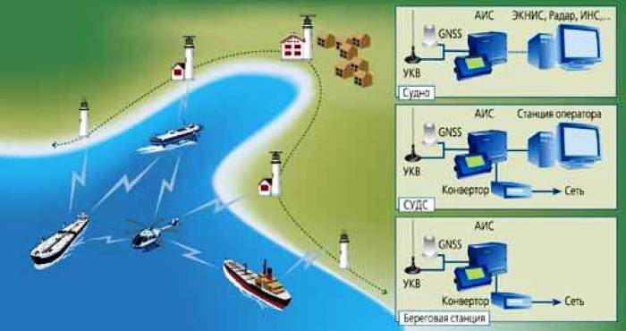

Назначение
АИС предназначена для повышения уровня безопасности мореплавания, эффективности судовождения и эксплуатации центра управления движением судов (ЦУДС), защиты окружающей среды, обеспечивая выполнение следующих функций:
- как средство предупреждения столкновений в режиме судно-судно;
- как средство получения компетентными береговыми службами информации о судне и грузе;
- как инструмент ЦУДС в режиме судно-берег для управления движением судов;
- как средство мониторинга и слежения за судами, а также в операциях по поиску и спасанию (SAR).
